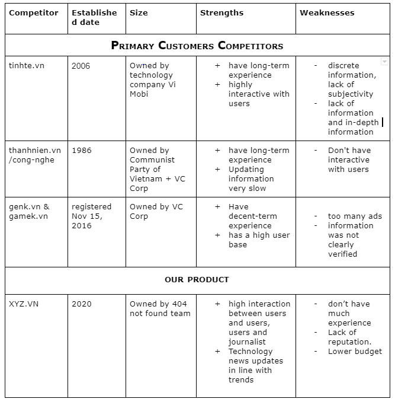

1 . The generals
Firstly, I will discuss this project's topic, understand the need for young people, and the rapid development of technology in Vietnam. We have created a combination of Online-Newspaper and Social Networking Service (SNS). With our product, the user can update daily tech news from trustful sources and freely discuss their opinions as well as receiving high cooperation from other users.
Furthermore, suppose it is invested heavily in the information array. In that case, xyz.vn news could educate the youth and people with a passion for technology of all ages about different aspects of technology from hardware, software, and general technology information without fear of data being not selective. Secondly, not stopped at updating news. Our products also focus on Social Networking Service (SNS), where users can discuss, ask questions, and post articles on topics they like. Moreover, these features create a group of netizen users who always interact. If successes and dominates the market share, our product could be the leading technology forum and urge the user to come whenever they need technical support.
Our projects' motivations came from a problem when we are finding an answer for our daily work; we encountered a situation where our solution was scattered everywhere and missing pieces. In addition, with the technology trend, people nowadays are focusing on technology news more than ever. Take advantage of these facts; we offer a product that combining Online-Newspaper and Social Networking Service (SNS). Result in a product fulfil our needs for technology news and a place where we can share and learn technology solutions. Because of this reason, it motivates us to complete the project since it is too necessary for today's technology era. This project in the future would show the employer that they are working for a thing that meets our needs, those around us and satisfy the needs of some users who encounter the same problems of us in the first place.
In other to demonstrate our landscape views we have made some analyze :

Reference:
- https://tinhte.vn/thread/cau-chuyen-khoi-nghiep-tinhte-it-ai-ngo-den-cua-cu-hiep.2082101/
- https://whois.domaintools.com/genk.vn